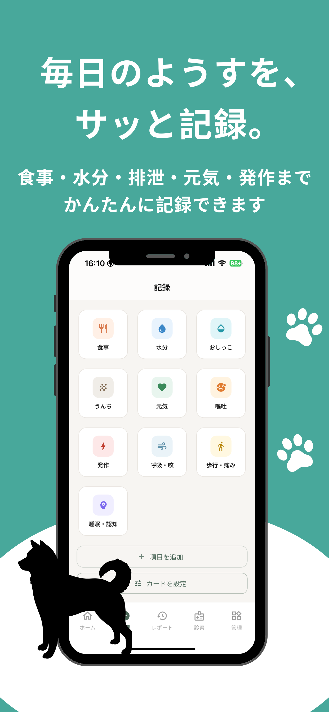
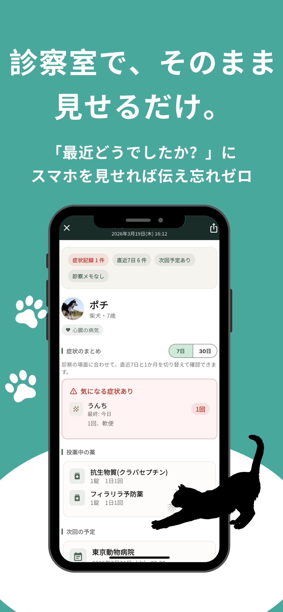
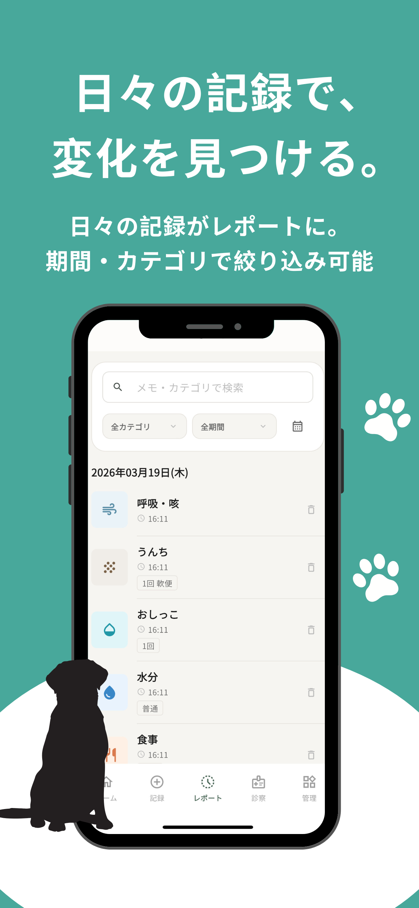

診察室を出た瞬間、先生に何を言われたか忘れてしまう
前回の薬の名前が思い出せない
体調の変化を、うまく言葉にできない
いつから症状が始まったのか、後で思い出せない
帰ってからメモしようとしたら、もう忘れていた
Features
うちの子カルテは、シニアペットの通院・体調・投薬をシンプルに記録して、必要なときにすぐ見返せるアプリです。
記録すること自体が、安心につながります。

01
食事・水分・排泄・元気・発作まで、かんたんに記録できます。写真やメモも一緒に残せます。

02
「最近どうでしたか？」にスマホを見せれば伝え忘れゼロ。診察モードで記録をまとめて確認できます。

03
記録はレポートで一覧・カレンダー表示。期間・カテゴリで絞り込んで、最近の変化を整理できます。
How it works
帰ったら1分。通院の内容・先生のコメントを残すだけ。
次の通院前にアプリを開く。前回の記録がすぐ出てきます。
記録が積み重なるほど、うちの子の変化に気づきやすくなります。
Reviews
★★★★★
「毎回の通院で何を言われたか忘れてしまっていたけど、診察前にアプリを開けば前回のメモがすぐ確認できる。先生との会話がスムーズになりました」
★★★★★
「シンプルで使いやすく、帰宅後すぐ入力できます。他のアプリは続かなかったのに、これは3か月以上続いています。記録が増えるほど愛着がわいてくる」
★★★★★
「1日2回の薬を飲ませているので、飲ませたかどうか不安になることが多かった。記録しておくだけで安心感がぜんぜん違います」
FAQ
はい、ペットの種類は問いません。うさぎ・小鳥・ハムスターなど、どんな動物にも記録をつけることができます。
記録はお使いのiPhone内に保存されます。アカウント登録は不要で、個人情報をサーバーに送信することはありません。
基本的な記録・閲覧・レポート機能は無料でご利用いただけます。アプリ内課金では、ペットの登録数を増やしたり、一部の高度な機能をアンロックできます。
現在はiOS（iPhone）のみ対応しています。Android版は今後のアップデートで対応予定です。
現時点では同一端末内での利用となります。複数端末での共有機能は今後追加予定です。